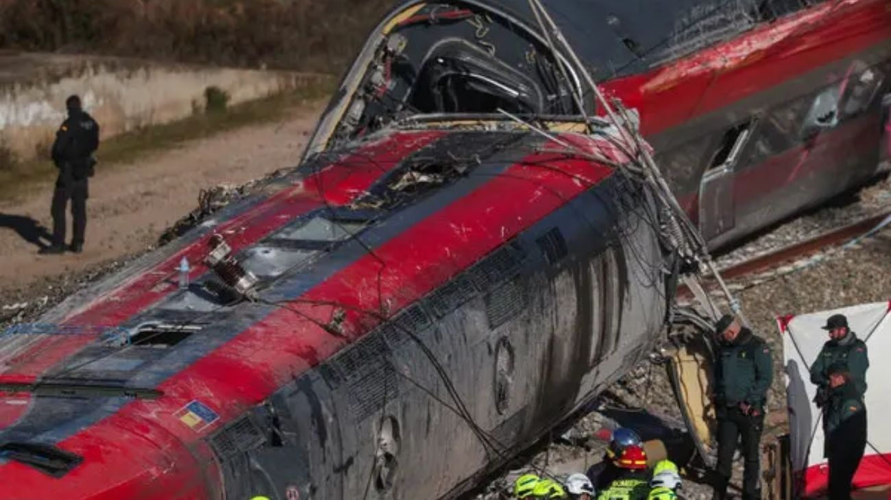

Tragedia en las vías: El impacto entre dos trenes de pasajeros sacude al sistema ferroviario español
los equipos de emergencia siguen limpiando la zona mientras los investigadores analizan si una rotura en las vías fue lo que causó el descarrilamiento.

El número de víctimas fatales por el choque de trenes ocurrido el pasado domingo en la localidad de Adamuz, España, se elevó a 42 personas. La actualización de la cifra fue confirmada por las autoridades de la Junta de Andalucía tras el hallazgo de un nuevo cuerpo durante las tareas de rescate realizadas este martes.
Equipos de emergencia recuperaron el cadáver en el interior de uno de los vagones del tren Alvia, el cual quedó reducido a un amasijo de hierros tras el impacto.
El accidente se produjo alrededor de las 19:45 del domingo, cuando tres vagones de un tren de alta velocidad de la operadora Iryo, que transportaba a unos 300 pasajeros desde Málaga hacia Madrid, descarrilaron y colisionaron contra una formación Alvia que se dirigía a Huelva con 200 personas a bordo.
El ministro de Transportes, Óscar Puente, advirtió que la cifra de fallecidos podría seguir aumentando, ya que las labores de rescate son extremadamente complejas y todavía queda por revisar gran parte de la estructura colapsada, para lo cual se requiere maquinaria pesada.
En cuanto a las causas de la tragedia, las pericias iniciales señalan una posible falla en la infraestructura ferroviaria.
Se ha detectado una rotura en uno de los carriles en el punto donde se cree que se originó el descarrilamiento, aunque los técnicos intentan determinar si dicha rotura fue la causa directa del siniestro o una consecuencia del impacto. El hecho ha causado gran conmoción en el país, especialmente porque el tramo donde ocurrió el accidente es una zona renovada, bien señalizada y sin dificultades geográficas que justificaran un incidente de tal magnitud.